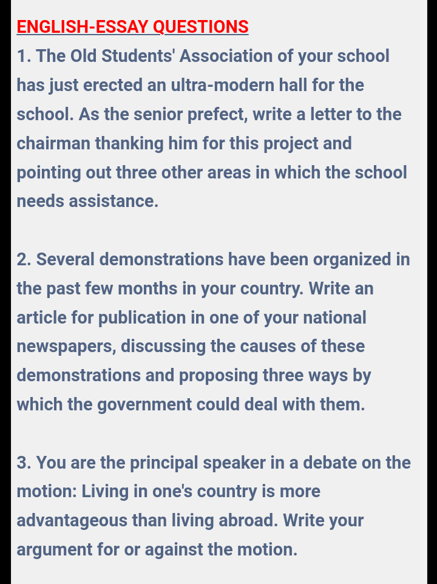
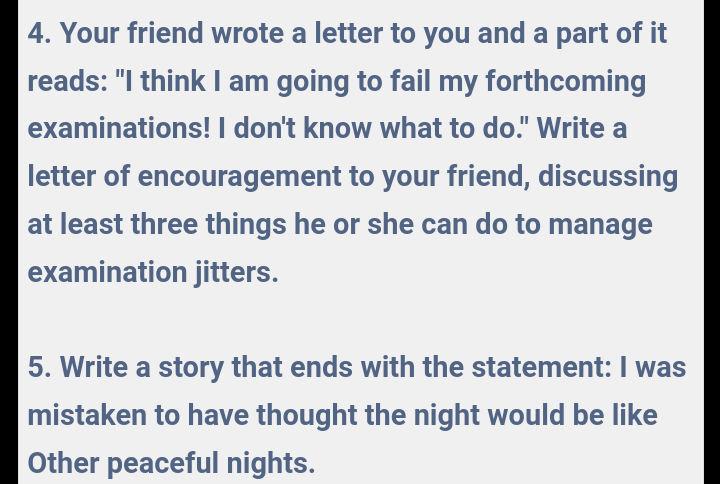

ENGLISH LANGUAGE ORAL
1-10 - - - - - - - - - - - - - - - - - -
11-20 - - - - - - - - - - - - - - - - -
21-30 - - - - - - - - - - - - - - - - -
31-40 - - - - - - - - - - - - - - - - -
41-50 - - - - - - - - - - - - - - - - -
Solving/Typing...
=============================
ENGLISH LANGUAGE OBJ
1-10 - - - - - - - - - - - - - - - - - -
11-20 - - - - - - - - - - - - - - - - -
21-30 - - - - - - - - - - - - - - - - -
31-40 - - - - - - - - - - - - - - - - -
41-50 - - - - - - - - - - - - - - - - -
Solving/Typing...
=============================
Good luck 🤞
Essay Questions


Essay
(5)
⚠️Make sure you include paragraphs
The town of Addyvile was known for its tranquil nights, where the soft whisper of the wind through the trees was the only sound that disrupted the silence. For years, I had lived there, relishing in the peacefulness that enveloped the small community. Little did I know that one fateful night would shatter that illusion forever. It was a chilly evening in late autumn when it happened. I had just finished dinner and settled into my favorite armchair with a book, ready to lose myself in its pages. The familiar routine was comforting, and I felt content as I immersed myself in the story. As the night wore on, a sudden knock at the door jolted me from my reverie. I frowned, puzzled by the interruption. Who could be calling at this hour? With cautious steps, I made my way to the door and peered through the peephole, expecting to see a familiar face. To my surprise, there stood a stranger, his silhouette illuminated by the dim glow of the porch light. Instinctively, I hesitated, unsure whether to open the door or pretend I wasn't home. But something about the urgency in his demeanor compelled me to unlock the door and face him. The stranger introduced himself as John, a traveler passing through town in need of assistance. He claimed to have lost his way and was seeking shelter for the night. Despite my initial apprehension, I couldn't turn him away, not on a cold night like this. Reluctantly, I invited John inside, offering him a warm meal and a place to rest. As we sat across from each other at the kitchen table, he shared snippets of his journey, painting a picture of adventure and uncertainty. There was an air of mystery about him, and I found myself captivated by his tales. Hours passed, and fatigue began to weigh heavily on my eyelids. I suggested that John retire to the guest room for the night, assuring him that he was welcome to stay until morning. With a grateful nod, he bid me goodnight and disappeared down the hallway. Alone once again, I settled into bed, the events of the evening swirling in my mind. Despite my reservations, there was a sense of satisfaction in helping a stranger in need. As I drifted off to sleep, I was filled with a newfound sense of purpose, grateful for the unexpected twist fate had thrown my way. But as the hours passed and darkness enveloped the town, a sense of unease began to creep into my subconscious. The stillness of the night was shattered by a series of strange noises echoing through the house. My heart raced as I realized the truth: I was mistaken to have thought the night would be like other peaceful nights.
(6)
(6a)
The writer's plans for his son was to be beat in his class.
(6b)
The writer's was dissatisfied with his son's performance because his son was not just trying hard enough
(6ci)
The writer had a broken home
(6cii)
The writer was maltreated by his step mother "
(6d)
The writer was optimistic about life
(6ei)
The writer enrolled his children in one of the best school
(6eii) The writer gave his children proper upbringing
(6fi)
Noun phrase
(6fii)
It modifies the verb phrase "had spared"